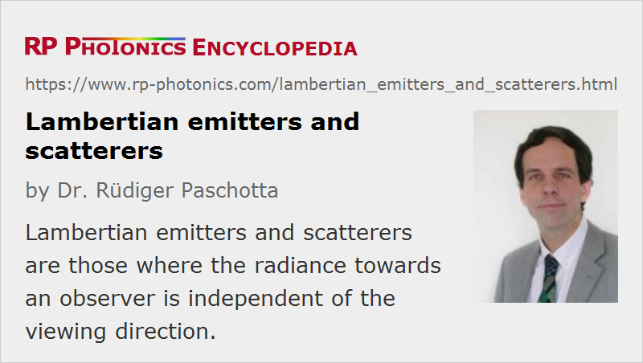

Lambertian Emitters and Scatterers
Definition: light emitters or scatters where the radiance towards an observer is independent of the viewing direction
German: Lambert-Strahler und -Diffusoren
Categories: general optics, non-laser light sources
How to cite the article; suggest additional literature
Author: Dr. Rüdiger Paschotta

When light is scattered on a surface, there can be different angular distributions of the scattered light. A special case of high practical and theoretical importance is that of a Lambertian scatterer (or Lambertian diffuser) (introduced by Johann Heinrich Lambert), where the radiance of light scattered towards an observer is independent of the observation direction. Assuming that the scattering object is a flat opaque area element (e.g. a diffuser disk), it appears equally bright from all directions in the hemisphere from which the illumination light comes.
At the same time, the radiant intensity (radiant flux per unit solid angle) follows Lambert's cosine law, which says that that quantity is proportional to the cosine of the angle between the observation direction and the surface normal. That implies that the radiant intensity vanishes when the observation angle approaches 90°.
At a first glance, the statement of constant radiance and Lambert's cosine law appear to be contradicting each other, but they are actually fully consistent. That can be understood as follows:
- The cosine law is relevant e.g. when one uses a photodiode to measure the scattered light intensity in some distance from the scatterer and at a variable observation angle. Here, the measured intensity indeed vanishes when the observation angle approaches 90°. Here, the apparent size of the emitter vanishes.
- The radiance is relevant for the case where e.g. a camera, consisting of a lens (or objective) and some kind of focal plane array (e.g. a CMOS image sensor) is used for detecting the scattered radiation. For increasing observation angles, the amount of light captured by the camera is reduced according to the cosine law, but at the same time the image of the scatterer on the image sensor gets accordingly smaller. Therefore, fewer pixels of the sensor are illuminated, but the intensity reaching each of those pixels within the image of the scatterer remains constant. The latter quantity is determined by the radiance. The same happens for observation with the human eye: the object appears with a size which is reduced for larger observation angles, but the brightness remains constant.
Note that despite the independence of radiance on the observation angle, there is another cosine factor related to the illumination angle: the radiance of scattered light decreases if the illumination angle is increased.
As already found by Johann Heinrich Lambert, various kinds of natural materials such as paper and uncoated wood have scattering characteristics which are not far from those of a Lambertian surface. The same holds for artificial materials like certain plastic materials and ceramics. For others, there can be substantial deviations. For example, some scatterers exhibit some amount of specular reflection in addition to the fully diffuse scattering. In other cases, there is increased retroreflection, i.e., the scattering occurs preferentially in directions roughly back towards the light source. Nevertheless, one often assumes Lambertian scattering in calculations e.g. in the context of ray tracing for illumination planning, even where that is only a rough approximation, because such a simple assumption can simplify the mathematical processing or more precise data are not available.
An example for a significant deviation from Lambertian scattering characteristics is the observation of the full Moon. Here, illumination and observation occur in similar directions. The outer parts of the Moon disk, as seen by the observer, are less intensely illuminated by the Sun due to the oblique incidence of the sunlight. If the Moon where a Lambertian scatterer, no additional angular dependence would be introduced by the observation angle. In total, the perceived brightness of the Moon should substantially decay towards the edges of the observed Moon disk. In reality, however, that intensity variation is much weaker than expected based on those considerations, because the surface of the Moon exhibits preferential retroreflection due to its structure.
Note that although Lambertian scattering represents a quite simple model, it is not consistent with a simple microscopic scattering model where the scattering surface is composed of a large number of scattering centers, each of which scatters uniformly in all directions of the open hemisphere.
Lambertian scatters are said to exhibit perfect diffusion and Lambertian reflectance – where reflectance is meant as a non-quantitative term.
Lambertian Emitters
For light emitters, Lambertian characteristics also means that the emitted radiance is independent of the observation direction, while the cosine law holds for the radiant intensity sent into different directions.
That behavior would occur, for example, for a flat blackbody source, emitting thermal radiation. Therefore, a glowing cylindrical rod, for example, with a constant surface temperature, which is observed from the side, would appear as a uniformly bright line, unless it has non-Lambertian emission characteristics. Similarly, the Sun would appear as a uniformly bright disk, if it were a Lambertian emitter; it is not, however, as is apparent from the well-known limb darkening effect: the outer parts are less bright, at least concerning the visible emission.
A Lambertian emitter may be realized by illuminating a Lambertian scatterer with some light source, which itself does not need to be Lambertian. A laser source, emitting a well directed laser beam, could be considered as about the opposite of a Lambertian emitter.
Questions and Comments from Users
Here you can submit questions and comments. As far as they get accepted by the author, they will appear above this paragraph together with the author’s answer. The author will decide on acceptance based on certain criteria. Essentially, the issue must be of sufficiently broad interest.
Please do not enter personal data here; we would otherwise delete it soon. (See also our privacy declaration.) If you wish to receive personal feedback or consultancy from the author, please contact him e.g. via e-mail.
By submitting the information, you give your consent to the potential publication of your inputs on our website according to our rules. (If you later retract your consent, we will delete those inputs.) As your inputs are first reviewed by the author, they may be published with some delay.
See also: diffusers, scattering, radiance
and other articles in the categories general optics, non-laser light sources
|  |
If you like this page, please share the link with your friends and colleagues, e.g. via social media:
These sharing buttons are implemented in a privacy-friendly way!